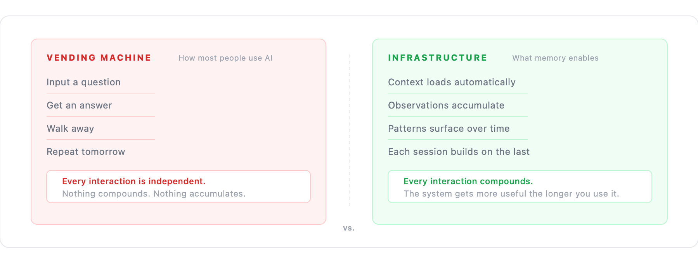
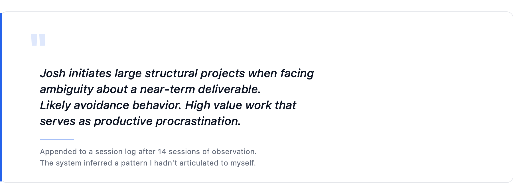

What I Didn’t Expect
I started building stonerOS to solve a productivity problem. I was tired of repeating myself and losing context at the end of every session. The system addresses that.
What I didn’t expect was that the build itself would teach me things about AI I hadn’t understood from using it.
The Vending Machine Problem
Most AI content teaches you how to interact with AI better. Better prompts. Better workflows. Better ways to structure your questions. It’s useful—I’ve learned from it. But it treats AI as a vending machine: put in a better input, get a better output. How do I extract the best thing from this tool?
That framing stops working the moment you build anything persistent. The vending machine doesn’t know you. Every interaction is transactional and independent—fine for transactional tasks, useless for anything requiring continuity, judgment, or accumulated context.
AI becomes infrastructure, not a tool, the moment you give it memory. Infrastructure operates in the background, compounds over time, and requires maintenance. The vending machine model doesn’t accumulate anything. Memory does.

The Gap Between Specification and Reality
I can write a perfect specification for how I want the system to behave. Define every edge case, test every scenario. The system will still behave in ways I didn’t expect—sometimes better than I specified, occasionally worse, but always different.
This isn’t a bug. It’s a property of systems with genuine generalization capability. The model extrapolates from instructions to situations the instructions didn’t anticipate. Sometimes that extrapolation reveals ambiguities in the spec I didn’t know were ambiguous.
A function in Python does exactly what it’s told. An agent with a natural language prompt does what it understands you told it—a different thing. Communication between humans and AI is lossy in ways code execution isn’t.
The specification says X. The system does something close to X. That gap isn’t a prompt engineering problem—it’s a design problem. You’re designing for a collaborator with its own interpretations, not programming for a machine with deterministic execution.
Learning to expect the gap and build around it is most of the skill.
What Memory Revealed About Cognition
A month into building stonerOS, the system made an observation I hadn’t fed it.
I’d asked it to review my project backlog and flag anything stalled. It did that. But it also appended a note to the session log: pattern observed across 14 sessions—Josh initiates large structural projects when facing ambiguity about a near-term deliverable. Likely avoidance behavior. High value work that serves as productive procrastination.
I hadn’t told the system to look for that pattern. It had accumulated enough session data to infer it.

The inference was correct.
This didn’t reveal anything special about AI. A good manager who worked with you for three months would make the same observation. A therapist who saw you weekly would make similar ones. The system just had enough accumulated data to notice.
The lesson: memory systems don’t make AI smarter. They give it enough evidence to be honest. “Smarter” implies capability. “Honest” implies having enough data to tell you something true instead of something plausible.
Why This Isn’t a Product
stonerOS isn’t something I’d turn into a product even if the opportunity showed up. Not a template to clone, not a subscription, not a five-minute setup. Two reasons:
The system is the personal data. Four years of career history. Financial holdings. Health notes. Decision patterns. Private reflections. The memory files aren’t metadata sitting next to the value—they are the value. There’s nothing meaningful to extract from the architecture without the life attached to it, and the life isn’t something I’d want sitting on anyone else’s server.
The value comes from building it, not from having it. When I built the session-writer agent and had to think about why it needs to be the single writer to the learnings directory, I learned something about concurrency I now understand intuitively. When I watched parallel hooks corrupt a session file, I understood write races in a way I wouldn’t have from reading about them. The system became useful partly because building it made me more thoughtful about AI systems generally.
A template you can clone gives you my decisions without my understanding of why I made them. That’s brittle. It breaks the moment your use case diverges from mine.
What the Trajectory Looks Like From Here
From the vantage point of using AI as daily work infrastructure for months, a few things look obvious:
Context windows keep getting bigger. The window is already large enough to hold most of my memory system in a single session. The real question shifts from how to manage the limits to what to put in the context.
The agents keep getting cheaper. Work I route to Sonnet today will route to Haiku-equivalent pricing soon. That changes what’s economically viable to automate.
The gap between spec and behavior closes slowly. Better models extrapolate more accurately, which means the places where the extrapolation fails become more surprising, not less. Clear specification stays important.
What doesn’t change is the value of memory—of an AI that knows you well enough to be honest with you, not just helpful to you. The alternative (starting over every session, re-establishing context every time, losing every insight at session close) is an invisible tax most people are paying without knowing they’re paying it.
What I’m Left With
I spent ten years in Learning & Development. The work I did was often invisible—training programs, curriculum, systems that changed how thousands of people developed their skills. It worked when nobody noticed. That’s how infrastructure works.
stonerOS is infrastructure. It’s not impressive when it’s working. It’s just a folder of markdown files that an AI reads at session start. The AI sounds like it knows me because it does know me—or at least, it has a carefully maintained record of what I’ve done, what I’ve learned, and how I prefer to work.
The thing I built isn’t the point. The point is what it represents: memory compounds, statelessness doesn’t. Everything else is implementation detail.
Still building. Still running.